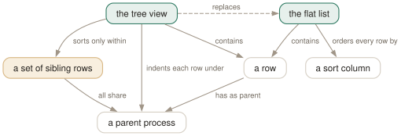

Day 05
Sorting and the tree
Two orderings of the same rows, and they are mutually exclusive on purpose.
By the end of today you can
- sort by any column in two keystrokes, and invert it in one
- explain why sorting by CPU% inside the tree does not put the busiest process at the top
- pin the selection to a process that keeps moving
The same rows, ordered two ways
htop has two ways to arrange the process list, and they are alternatives rather than options you combine. A sort orders every row by one column. The tree orders rows by parentage. Asking for a sort while in the tree throws you out of the tree, and that surprises everybody exactly once.
The reason is that the tree is not a decoration applied to a sorted list — it is an ordering, and a total one: every row's position is determined by its ancestry. Two total orderings of the same rows cannot both be in effect.

Sorting, in one or two keystrokes
F6 opens the “Sort by” menu — and so do >, < and ., all of which work despite no single piece of documentation listing all of them. Arrows to move, Enter to sort, Esc to back out.
Four columns are on single keys, inherited from top(1):
- N
- PID. Ascending, so it is roughly boot order — a cheap way to see what started recently.
- P
CPU%. The default.- M
MEM%, which meansRES, with all of Day 3's caveats.- T
TIME+. Cumulative CPU since start — who has burned the most, ever.
I inverts. The current sort column is marked in the heading row with a highlight and a ▽ or △, which is the fastest way to answer “what am I even looking at” after coming back to a terminal.
The tree
F5 or t switches to tree view. You can tell you are in it without looking at the rows: the F5 label on the function bar changes to List, because that is what pressing it will do next.
PID△USER PRI NI VIRT RES PRIV S CPU% MEM% TIME+ Command
1 root 20 0 40080 22080 10516 S 0.0 0.0 0:02.67 systemd
843 root 20 0 67440 36624 1924 S 0.0 0.1 0:00.41 ├─ systemd-journald
875 root 20 0 16604 6988 1044 S 0.0 0.0 0:00.04 ├─ systemd-userdbd
1869 root 20 0 97348 68616 28732 S 0.0 0.1 0:04.12 ├─ dockerd
1485 root 20 0 49236 34128 15108 S 0.0 0.1 0:02.30 │ ├─ containerd
F1Help F2Setup F3SearchF4FilterF5List F6SortByF7Nice -F8Nice +F9Kill F10Quit
- + -
- Expand or collapse the selected subtree. A collapsed subtree shows a
+to the left of the name. - *
- Expand or collapse everything at once — strictly, every child of every parentless PID, which on Linux means PID 1 and
kthreadd.
Keeping the tree still
The tree redraws every 1.5 seconds, and processes come and go, so the line you were reading tends to slide out from under you. htop offers three behaviours, and the manual page hides them inside the -t flag:
-t=classic/-t=0- No stabilisation. The tree redraws wherever the rows fall.
-t=soft/-t=1- Try to keep the currently selected line in the same place on screen.
-t=hard/-t=2- As soft, and additionally allow the whole tree to move down, leaving blank space above the root when that is what it takes.
There is also an older behaviour worth naming because you will meet it in other people's configs: “tree view is always sorted by PID”, which was how htop 2 did it. It lives in the Setup screen, and Day 9 will show you where.
Follow
F pins the selection to whatever process is selected now. Sort the list, let everything reorder around it, and your row stays selected — htop tracks the process, not the position.
It is sticky by default: follow mode stays on until you press F again. With it on, the ordinary movement keys will feel wrong, because the selection is no longer yours to move. Shift-Up and Shift-Down — or the Alt-Up and Alt-Down forms from Day 2 — pan the view without breaking the pin, which is how you look around while still following.
Today's habit
Stop starting htop plain and then fixing it. Decide what question you are asking before you launch: htop -s PERCENT_MEM for memory, htop -t for “what started this”, htop -s TIME for “what has been eating this box all week”.
That is the last of the essentials. You can now navigate, read the columns honestly, find anything and order it however you like. Everything from here changes the machine rather than just looking at it.
Tomorrow: tagging, signals, nice, affinity — acting on processes, and the ways that goes wrong.
New vocabulary
Keys
| Key | Does |
|---|---|
| F6><. | Open the “Sort by” menu. All three punctuation aliases work. |
| I | Invert the sort direction. The arrow in the heading flips. |
| NPMT | Sort by PID, CPU%, MEM% and TIME. The top(1) compatibility keys. |
| F5t | Toggle tree view. The F5 label changes to List while you are in it. |
| +- | Expand or collapse the selected subtree. |
| * | Expand or collapse every subtree at once. |
| F | Follow: pin the selection to this process wherever it moves. |
Commands
| Command | Does |
|---|---|
htop -s PERCENT_MEM | Start sorted by a column. Forces list view. |
htop -s PERCENT_MEM -t | Sorted and in tree view — the one way to have both. |
htop --sort-key help | Print every sortable column name and what it means. |
htop -t=soft | Tree view with a stable cursor line. classic, soft and hard, or 0/1/2. |
Drillsdo these in a real terminal, today
Self-check
Answer out loud first, then unfold.
You are in tree view, you press P to sort by CPU%, and the tree vanishes. Is that a bug?
No, it is the design. The tree is an ordering — parents above children, depth-first — so it cannot coexist with an arbitrary sort of the whole list. The manual page says it plainly: “Selecting a sort view will exit tree view.”
The way to have both is to ask for both at startup: htop -s PERCENT_CPU -t. Then the tree structure is kept and the sort is applied only within each set of siblings, which is a genuinely different and often more useful picture — the busiest child of each parent, rather than the busiest process on the box.
Running htop -s PERCENT_CPU -t, you expect the hungriest process at the top and instead the top row is systemd at 0.0%. Explain the list you are looking at.
In tree view the sort applies to direct children of each process, never to the list as a whole. The top row is PID 1 because PID 1 is the root of the tree, and roots come first regardless of what they are using.
What the sort bought you is that within each parent, the busiest child is listed first — so walking down from a root follows the hot path through the tree. If you want “the busiest process on this machine, full stop”, that is a question about a flat list, and you should leave the tree.
A process is bouncing in and out of the top of a CPU%-sorted list, and every time you try to select it the list reorders and you select something else. What is the fix, and what is the trap in the fix?
F — follow. Select the process once, press F, and the selection stays glued to it no matter where the sort order carries it. It is the only way to watch a single process without freezing the whole screen with Z.
The trap is that follow mode is sticky by default, so it stays on until you press F again — and while it is on, the ordinary movement keys behave oddly because the selection is pinned. Shift-Up and Shift-Down still pan the view, which is how you look around without losing the pin.
The manual page lists F6, < and > for choosing a sort column. htop's own help screen lists F6, > and .. Which should you believe?
Neither, entirely — all four work. The page and the help each list a different incomplete subset, and the binary accepts <, > and . as well as F6.
This is worth more than the trivia. Two independent pieces of documentation disagreeing usually means both are stale, and the union of what they claim is a better guess than either. It costs ten seconds to press a key and find out, and that habit will serve you on every tool you ever learn.
Cheat sheet
F6 > < . open the 'Sort by' menu (all four work)
I invert the sort direction
N P M T sort by PID / CPU% / MEM% / TIME+ (top-compatible keys)
F5 t tree view on/off -- the F5 label reads 'List' while you are in it
+ - expand / collapse the selected subtree
* expand / collapse everything
F follow: pin the selection to this process (sticky; F again to stop)
htop -s PERCENT_MEM sorted, flat (a sort FORCES list view)
htop -s PERCENT_MEM -t sorted, tree (sort applies within siblings only)
htop -t=soft tree with a stable cursor line (classic|soft|hard)
htop --sort-key help every sortable column, with descriptions
In tree view the sort orders each parent's children among themselves, never the list as a whole — so the top row is a root process, whatever it is using.
Everything through Day 05
Keys
| Key | Does |
|---|---|
| Ctrl-L | Redraw the screen and recalculate, without waiting for the next tick. |
| Z | Pause and resume sampling. The screen freezes; the machine does not. |
| F10q | Quit. This is also the only exit that saves your settings. |
| UpDown | Move the selection one row. Alt-k and Alt-j do the same. |
| PgUpPgDn | Move the selection a screenful at a time. |
| HomeEnd | Jump to the first or the last process in the list. |
| LeftRight | Scroll the whole list sideways. Also Alt-h and Alt-l. |
| Ctrl-A^ | Scroll back to the start of the selected process's line. |
| Ctrl-E$ | Scroll to the end of the selected process's line. |
| Alt-UpAlt-Down | Pan the view without moving the selection. Shift-Up/Shift-Down too, if your terminal lets them through. |
| p | Toggle full program paths in Command. |
| m | Toggle merging exe, comm and cmdline into Command. |
| F3/ | Incremental search: move the selection to the next match. Does not hide anything. |
| F3 | While searching: jump to the next match. Shift-F3 goes backwards. |
| F4\ | Incremental filter: hide every row that does not match. |
| Enter | In the filter prompt: keep the filter and put the prompt away. |
| Esc | In the filter prompt: clear the filter. In search: cancel it. |
| u | Open the user menu and show only one user's processes. |
| Digits | Type a PID and the selection jumps to it. Silently — there is no prompt. |
| F6><. | Open the “Sort by” menu. All three punctuation aliases work. |
| I | Invert the sort direction. The arrow in the heading flips. |
| NPMT | Sort by PID, CPU%, MEM% and TIME. The top(1) compatibility keys. |
| F5t | Toggle tree view. The F5 label changes to List while you are in it. |
| +- | Expand or collapse the selected subtree. |
| * | Expand or collapse every subtree at once. |
| F | Follow: pin the selection to this process wherever it moves. |
Commands
| Command | Does |
|---|---|
htop | Start htop, reading ~/.config/htop/htoprc once at startup. |
htop -d 10 | Sample every 10 tenths of a second. Clamped to the range 1–100. |
htop -n 5 | Draw five frames, then exit on its own. Absent from the manual page. |
htop -V | Print the version. The -v in the SYNOPSIS does not exist. |
htop -F chrome | Start with the filter already applied. Multiple terms: -F 'nginx|php'. |
htop -p 1,843 | Show only these PIDs, and nothing else ever appears. |
htop -u | Show only your own processes. |
htop -u postgres | Show one user's processes. A numeric UID works too. |
htop -s PERCENT_MEM | Start sorted by a column. Forces list view. |
htop -s PERCENT_MEM -t | Sorted and in tree view — the one way to have both. |
htop --sort-key help | Print every sortable column name and what it means. |
htop -t=soft | Tree view with a stable cursor line. classic, soft and hard, or 0/1/2. |
Options
| Option | Does |
|---|---|
delay | Tenths of a second between samples in htoprc. Default 15, i.e. 1.5 s. |
M_VIRT | Address space the process has mapped. VIRT. Mostly promises, not memory. |
M_RESIDENT | Pages actually in RAM, shared ones counted in full. RES. |
M_SHARE | The part of RES that other processes also map. SHR. |
M_PRIV | Resident minus shared — what dies with the process. PRIV, a default column. |
M_SWAP | Pages of this process pushed out to swap. SWAP. |
M_PSS | Resident, but each shared page divided by its number of sharers. PSS. |
M_PSSWP | The same proportional treatment for swapped-out pages. PSSWP. |
M_EPSS | PSS plus PSSWP: the whole footprint, proportionally. EPSS. |
PERCENT_MEM | RES as a share of total RAM. MEM% — and it inherits RES's double counting. |